Pandas plot() 함수
Table of contents
*Pandas 내장 기능인 .plot() 함수를 사용하면 쉽게 그래프를 그릴 수 있다.
(당연히 element가 ‘숫자형’일때만 그래프 그려짐)
선 그래프
import pandas as pd
%matplotlib inline # 그래프의 결과를 출력 세션에 나타나게 하는 설정
df = pd.read_csv('data/broadcast.csv', index_col=0) ## 데이터 출처: codeit
df
| KBS | MBC | SBS | TV CHOSUN | JTBC | Channel A | MBN | |
|---|---|---|---|---|---|---|---|
| 2011 | 35.951 | 18.374 | 11.173 | 9.102 | 7.38 | 3.771 | 2.809 |
| 2012 | 36.163 | 16.022 | 11.408 | 8.785 | 7.878 | 5.874 | 3.31 |
| 2013 | 31.989 | 16.778 | 9.673 | 9.026 | 7.81 | 5.35 | 3.825 |
| 2014 | 31.21 | 15.663 | 9.108 | 9.44 | 7.49 | 5.776 | 4.572 |
| 2015 | 27.777 | 16.573 | 9.099 | 9.94 | 7.267 | 6.678 | 5.52 |
| 2016 | 27.583 | 14.982 | 8.669 | 9.829 | 7.727 | 6.624 | 5.477 |
| 2017 | 26.89 | 12.465 | 8.661 | 8.886 | 9.453 | 6.056 | 5.215 |
- 기본 그래프 그려보기
df.plot() # df.plot(kind='line') 이렇게 써도 동일. 선(line) 그래프가 default이기 때문.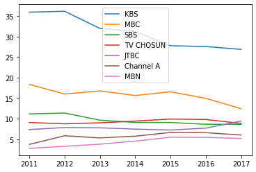
- 1개 값에 대해서만 그래프 그리기
df.plot(y='KBS') # KBS에 대해서만 그래프를 그림 # df['KBS'].plot() 이렇게 써도 거의 동일.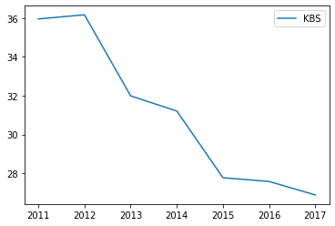
- 2개 값에 대해 그래프 그리기
df.plot(y=['KBS', 'MBC']); # df[['KBS', 'MBC']].plot() 이렇게 써도 동일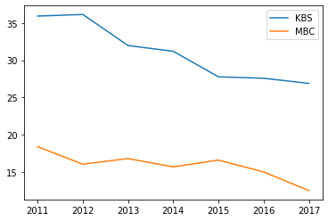
막대 그래프
df = pd.read_csv('data/sports.csv',index_col=0) ## 데이터 출처: codeit
df
| Male | Female | |
|---|---|---|
| Swimming | 103 | 178 |
| Baseball | 363 | 289 |
| Basketball | 151 | 97 |
| Golf | 154 | 232 |
| Soccer | 413 | 109 |
| Bowling | 88 | 129 |
- 기본 막대 그래프
df.plot(kind='bar')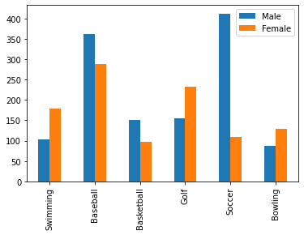
- 가로 방향 막대 그래프
df.plot(kind='barh'); # 'h' is for 'horizontal'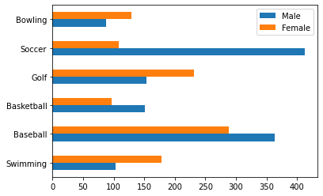
- 누적 막대 그래프
df.plot(kind='bar', stacked=True); # 남+여 통틀어 어떤 운동이 가장 인기가 많은지 볼 수 있다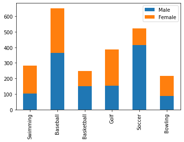
- 1개 값에 대해서만 그래프 그리기
df['Female'].plot(kind='bar'); # 여성을 대상으로한 조사결과만 보고 싶을 때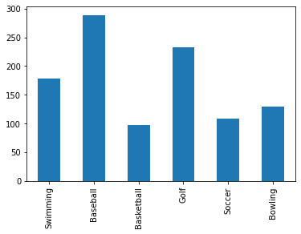
파이 그래프
df = pd.read_csv('data/broadcast.csv', index_col=0) ## 데이터 출처: codeit
df
| KBS | MBC | SBS | TV CHOSUN | JTBC | Channel A | MBN | |
|---|---|---|---|---|---|---|---|
| 2011 | 35.951 | 18.374 | 11.173 | 9.102 | 7.38 | 3.771 | 2.809 |
| 2012 | 36.163 | 16.022 | 11.408 | 8.785 | 7.878 | 5.874 | 3.31 |
| 2013 | 31.989 | 16.778 | 9.673 | 9.026 | 7.81 | 5.35 | 3.825 |
| 2014 | 31.21 | 15.663 | 9.108 | 9.44 | 7.49 | 5.776 | 4.572 |
| 2015 | 27.777 | 16.573 | 9.099 | 9.94 | 7.267 | 6.678 | 5.52 |
| 2016 | 27.583 | 14.982 | 8.669 | 9.829 | 7.727 | 6.624 | 5.477 |
| 2017 | 26.89 | 12.465 | 8.661 | 8.886 | 9.453 | 6.056 | 5.215 |
→ 2017년 데이터만 추출
df.loc[2017]
KBS 26.890
MBC 12.465
SBS 8.661
TV CHOSUN 8.886
JTBC 9.453
Channel A 6.056
MBN 5.215
Name: 2017, dtype: float64
→ 2017년 데이터로 파이 그래프 그리기
df.loc[2017].plot(kind='pie')
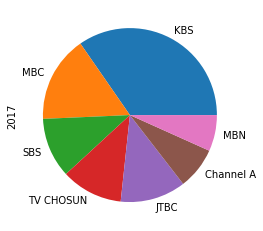
+) 추가 tip: pie가 동그랗게 그려지지 않는 경우, axis('equal')을 붙여주면 된다
df.loc[2017].plot(kind='pie').axis('equal')
###히스토그램
df = pd.read_csv('data/body.csv', index_col=0) ## 데이터 출처: codeit
df.head()
| Number | Height | Weight |
|---|---|---|
| 1 | 176 | 85.2 |
| 2 | 175.3 | 67.7 |
| 3 | 168.6 | 75.2 |
| 4 | 168.1 | 67.1 |
| 5 | 175.3 | 63 |
- 기본 히스토그램: 10개 구간으로 나눠서 그려짐
df.plot(kind='hist', y='Height'); # 10개 구간으로 나뉘는 게 default setting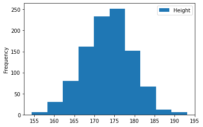
- y축의 ‘Frequency’는 빈도수. 이 히스토그램의 경우, 키가 175-177.5인 학생이 250명 있다는 뜻
- 구간 수 조정
df.plot(kind='hist', y='Height', bins=15); # 15개 구간으로 나누기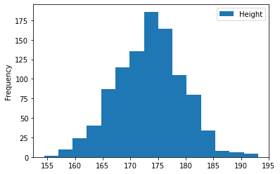
- bins는 숫자가 크다고 무조건 좋은 게 아니라, 인사이트를 가져오기 좋은 적당한 숫자를 잘 골라야한다
박스 플롯
df = pd.read_csv('data/exam.csv') ## 데이터 출처: codeit
df.head()
| gender | race/ethnicity | parental level of education | lunch | test preparation course | math score | reading score | writing score | |
|---|---|---|---|---|---|---|---|---|
| 0 | female | group B | bachelor’s degree | standard | none | 72 | 72 | 74 |
| 1 | female | group C | some college | standard | completed | 69 | 90 | 88 |
| 2 | female | group B | master’s degree | standard | none | 90 | 95 | 93 |
| 3 | male | group A | associate’s degree | free/reduced | none | 47 | 57 | 44 |
| 4 | male | group C | some college | standard | none | 76 | 78 | 75 |
*‘math score’ 데이터 분포 확인해보기(최솟값, 1사분위값, 2사분위값, …)
df['math score'].describe()
count 1000.00000
mean 66.08900
std 15.16308
min 0.00000
25% 57.00000
50% 66.00000
75% 77.00000
max 100.00000
Name: math score, dtype: float64
*‘math score’ 데이터 분포 박스플롯으로 확인하기
df.plot(kind='box', y='math score')
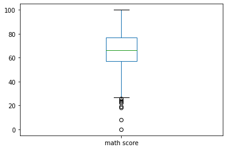
※ box plot 설명
- 박스 위~아래가 IQR(Interquartile Range)
- 박스 중앙의 선이 중앙값 (= Q2, 2사분위값, 50% 지점)
- 박스 맨 윗부분: Q3 (3사분위값, 75% 지점)
- 박스 맨 아랫부분: Q1 (1사분위값, 25% 지점)
- 박스 위쪽 선(수염)의 끝 부분: Upperfence 내 최대값 (= Q3 + 1.5*IQR보다 작은 값 중 가장 큰 값)
- Upperfence(상위 경계): Q3 + 1.5*IQR
- 박스 아래쪽 선(수염)의 끝 부분: Lowerfence 내 최소값 (= Q1 - 1.5*IQR보다 큰 값 중 가장 작은 값)
- Lowerfence(하위 경계): Q1 - 1.5*IQR
- 박스 & 수염 부분을 벗어난 동그란 점들은 outlier(이상점)
산점도 (Scatter Plot)
df = pd.read_csv('data/exam.csv') ## 데이터 출처: codeit
df.head()
| gender | race/ethnicity | parental level of education | lunch | test preparation course | math score | reading score | writing score | |
|---|---|---|---|---|---|---|---|---|
| 0 | female | group B | bachelor’s degree | standard | none | 72 | 72 | 74 |
| 1 | female | group C | some college | standard | completed | 69 | 90 | 88 |
| 2 | female | group B | master’s degree | standard | none | 90 | 95 | 93 |
| 3 | male | group A | associate’s degree | free/reduced | none | 47 | 57 | 44 |
| 4 | male | group C | some college | standard | none | 76 | 78 | 75 |
- 수학 점수와 읽기 점수 간의 연관성 확인
df.plot(kind='scatter', x='math score', y='reading score')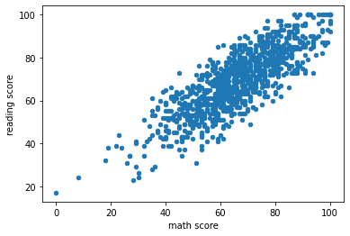
- 읽기 점수와 쓰기 점수 간의 연관성 확인
df.plot(kind='scatter', x='reading score', y='writing score')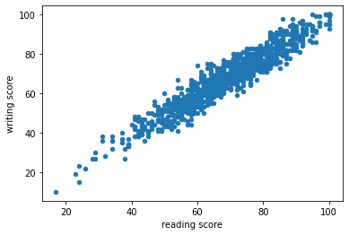
- 읽기 점수와 쓰기 점수 간의 연관성이 수학 점수와 읽기 점수 간의 연관성보다 크다고 판단